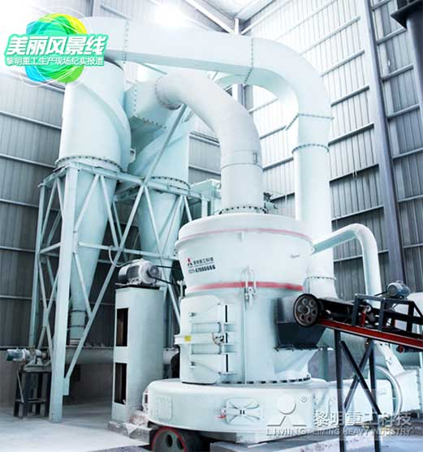

发布日期：2017-08-31 浏览次数：1017
导读: 前言：“三十功名尘与土，八千里路云和月”，三十年来，黎明重工的制砂、碎石、磨粉设备，凭借过硬的产品品质和服务，扎根异国他乡的云和月，先后服务于全球130多个国家和地区的两万多家客户，在环境友好、生态友好的理念下，参与当地的基础设施建设和矿产资源开发， ...
三四月份，美丽的江苏省宜兴市迎来梅雨季，被小雨浸染过的城市，干净而富有灵性。宜兴市素有“陶的古都、洞的世界、茶的绿洲、竹的海洋”之称，是闻名的紫砂壶的原产地，同时，拥有石灰岩溶洞80多个，是中国综合实力最强的县级市之一。黎明重工一条20T/H的MTW175磨机生产线正坐落于此。这条生产线主要用来加工石灰石，所产出的石灰粉用于电厂脱硫及高标准高速公路建设，是黎明重工在当地的示范生产基地，该条生产线依河傍山，水陆交通便利，整条生产线全自动生产，高效除尘实现车间作业无尘化。
智慧物联：整条生产线实现全自动化生产
黎明重工专注于矿山、建筑、能源等国家重点基础设施建设工程所需的大型设备的研发制造，并提供专业技术解决方案。近年来黎明重工在原有传感技术、信息自动化、中央控制技术的基础上，开始加大了对物联网技术的研究应用，打造破碎磨粉生产线的智能化运行。融入物联网技术后，客户在磨机物联网项目的协助下，可以对高端粉磨设备进行智能便捷化管理，通过使用计算机、触摸屏、手机智能移动终端就可以了解设备运行情况，查看现场，进行科学分析管理，为粉磨行业提供更高效、更智能、更全面、更完善的解决方案，实现客户的价值最大化。
节能环保：实现车间作业无尘化
黎明重工为用户提供破碎、烘干、研磨、筛选、包装一体化设计、供货、施工、服务等全方面解决方案。配置专用脉冲除尘器，粉尘排量少，基本实现车间无尘化作业;运行噪音低，机器振动小。
MTW磨粉机：黎明重工明星设备链上耀眼的明珠
从世界上第一台雷蒙磨粉机诞生到世界上第一台立式辊磨机问世，从1987年的第一代R型雷蒙磨到1994年的第二代YGM高压悬辊磨，从2005年的第三代TGM超压梯形磨，到2009年第四代MTW欧版磨的重磅推出，再到2013年的MTW欧版磨升级版问世，黎明重工在磨粉机上的工艺造诣日臻深厚，不断完善升级的磨粉机，为
锥齿轮整体传动
传统磨机需另有减速机，通过联轴节传动主轴，安装时对中难度大，易产生噪音，降低效率。MTW欧版梯形磨粉机为锥齿轮整体传动，结构更加紧凑，安装调节更方便快捷，效率大大增加;
内部稀油润滑系统
采用内部油泵，无需另外增加油泵或润滑站，就可以实现主轴轴承和圆锥齿轮轴轴承的润滑;
弧形风道
采用曲面型风道，切向气流进口顺滑，阻力小，内部出口方向有利于物料的分散，不易堵料，克服传统磨机直板型风道易产生涡流导致风道堵塞等缺点;
曲面可换刀刃铲刀
梯形磨铲刀，刃部采用高耐磨合金材料，使用寿命长，更换时只需更换刀刃部分，提高了材料利用率。另外传统的平面型铲刀，物料铲起后堆积在一个层面上，使磨辊、磨环中部磨损严重，曲面型铲刀可将物料导向立面，使磨辊磨环上、中、下部都能磨粉，使其均匀磨损，同时也增大了有效工作面积，从而增加了产量;
无阻力进风蜗壳
内部门板内面与进风蜗壳内面在同一曲面上，有效避免涡流效应。
在调研过程中，客户给予黎明重工很大的认可，“当时上黎明重工的设备也是比较大胆的，也幸亏是上了黎明重工的设备”。近年来，江苏省各级政府对资源的管控非常的严格，而且对环保要求非常苛刻，恰逢环保总局进行全国巡视，得益于黎明重工的绿色环保生产，让客户成为为数不多的通过政府“最严环保标准”审查的公司之一，被客户称为“一次意想不到的惊喜”。据我们所了解，该生产线自运行投产以来，产量、质量一直很出色。
版权所有：黎明重工备案号:豫ICP备10200540号-22服务热线：400-655-1888E-mail：Vip@lmlq.com 地址：中国郑州国家高新技术产业开发区科学大道169号 邮编：450001 网站统计